| 日付 | 2021年7月31日（土） - 2021年8月7日（土） | ||||||||
|---|---|---|---|---|---|---|---|---|---|
| 山域 | 東北の山 | ||||||||
| メンバー | 家族（妻、長女・10歳、長男・8歳） | ||||||||
| 山行形態 | 子連れ7泊8日キャンプ | ||||||||
| アクセス | 車、バス | ||||||||
| ルート (Map2) |
|
4日目
本日はそこそこの晴予報。アスピーテラインを通って秋田焼山に向かう。
八幡平はかつてアスピーテ（楯状火山）と考えられており、
そこを通る道路なのでアスピーテラインと名付けられたのだが、
その後火山の研究が進み、八幡平はアスピーテでないことが判明してしまった。
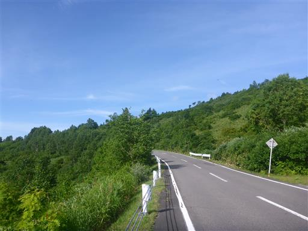
ここは絶景道路。ついに岩手山を間近から望むことができた。
これまでずっと雲の中にあって、旅行中に姿が見られないかもと
思っていた岩手山が目の前に聳えている。
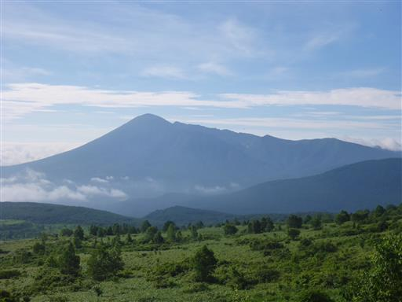
八幡平から続く裏岩手縦走路。ゆったりとした稜線が続いている。
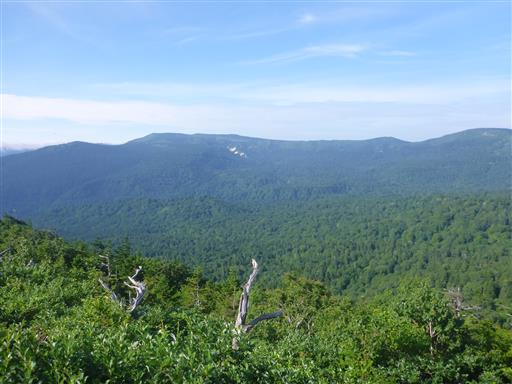
秋田焼山に登る予定だったが、あまりにも天気が良いため
予定を変更して八幡平に登ることにする。
八幡平登山口から少し下ったところにある無料駐車場に車を停める。標高1540m。
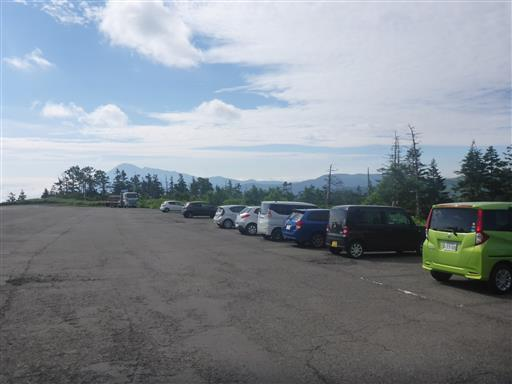
その上にある有料駐車場。まだオープンしていない。
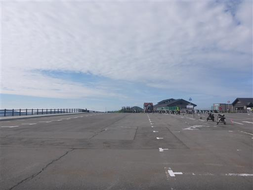
八幡平の標識。
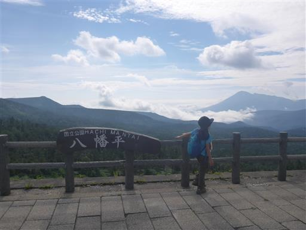
展望台があるので登ってみる。
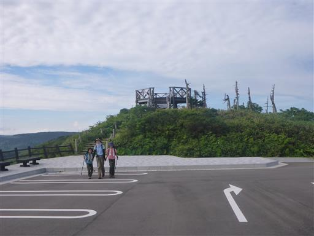
なぜか枯木が点在している。
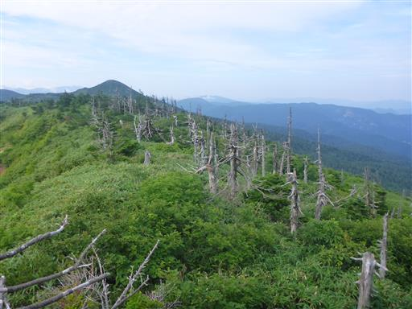
眼下に小さな湿地が見える。
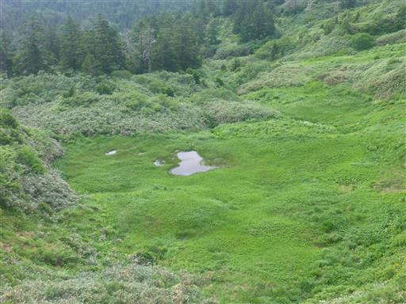
右奥に見えるのが森吉山、その手前に見えるのが本日登ろうと思っていた秋田焼山だ。
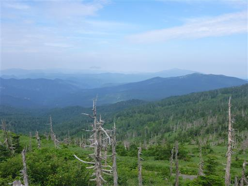
売店の外にあった、木でできたオコジョ。
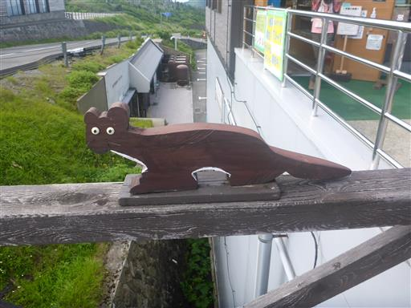
登山開始。道は石畳で観光客でも歩きやすいようになっている。
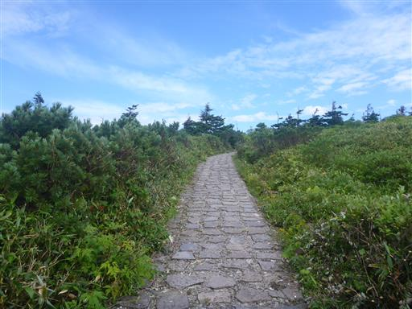
凹地に水が溜まっている。
成因は不明らしいが、噴火口ではなく陥没した穴のように見える。
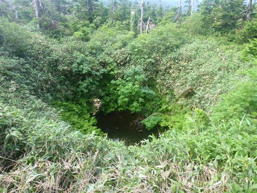
鏡沼。静かな湖面で空の景色を映している。
春の雪解け時には沼が竜の目に見え、ドラゴンアイと呼ばれている。
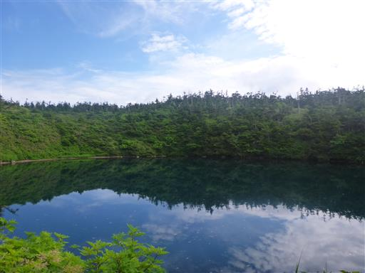
続いてめがね沼。沼に近すぎて2つを同時には写せない。
鏡沼と並んで、3つの丸い沼が並んでいる。
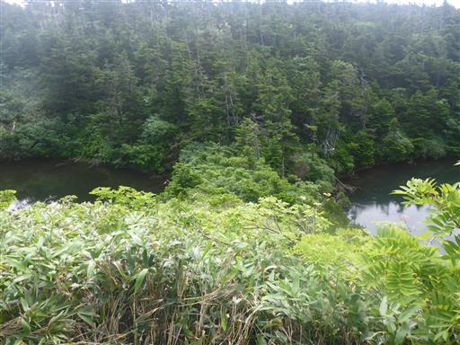
周囲はアオモリトドマツ（オオシラビソ）の森だ。
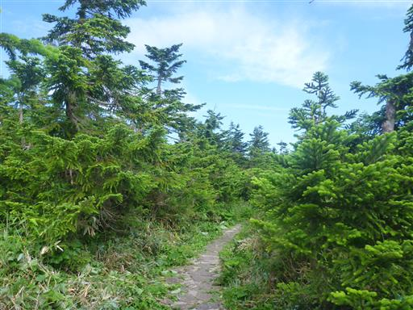
八幡平の山頂に到着。標高1613m。
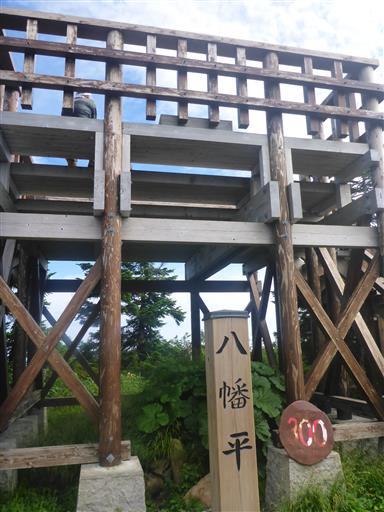
大きな展望台があるので登ってみる。
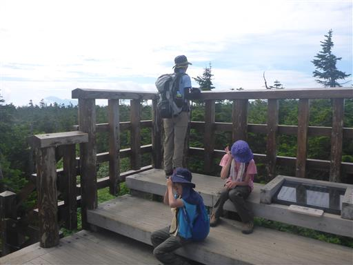
しかし背の高い樹林に覆われていて、あまり展望は開けない。
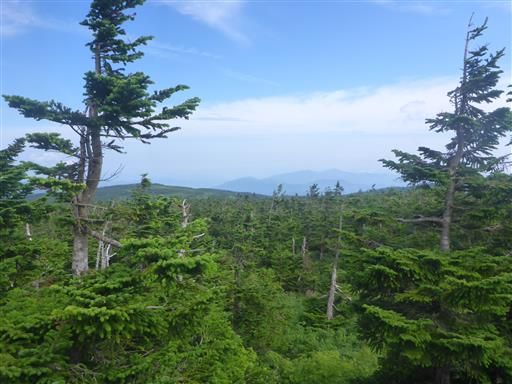
子供たちは木の枝に止まっているトンボを狙っている。
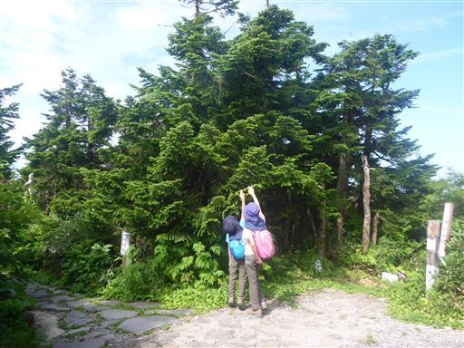
山頂を出発。
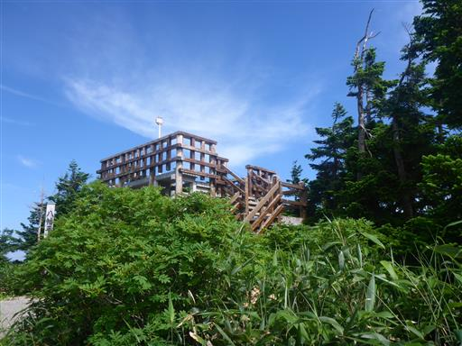
ガマ沼の展望台に到着。

青色の驚くほど美しい沼だ。
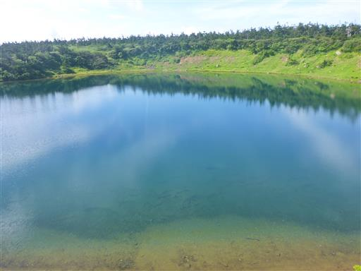
そしてすぐ左には八幡沼が見える。なんと風光明媚な場所だろう。
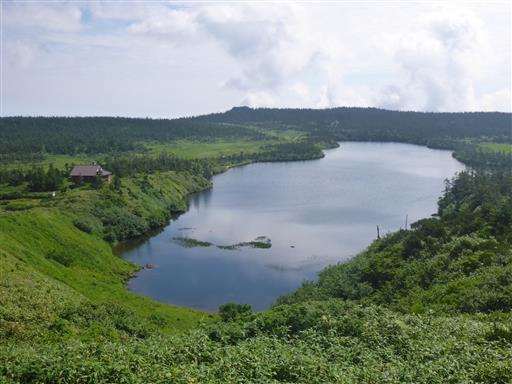
沼の畔を歩いていく。
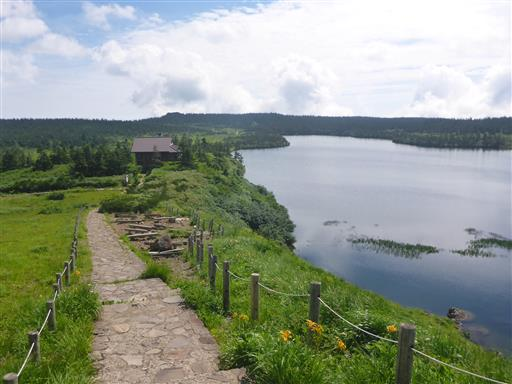
2羽の水鳥がものすごいスピードで泳いでいる。人が来て驚いたのだろうか？
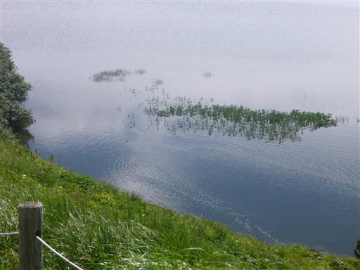
ニッコウキスゲの花が咲いている。
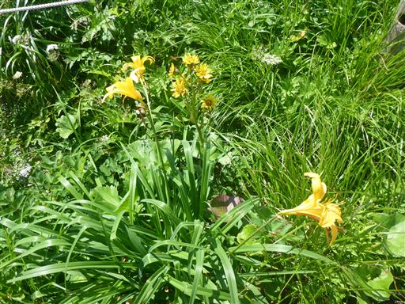
ウメバチソウもところどころで見られる。
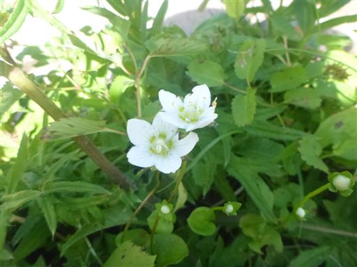
避難小屋の陵雲荘に立ち寄る。
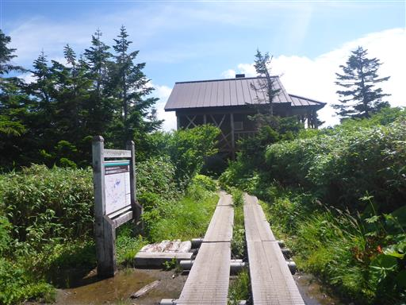
中にはなんと暖炉がある。すぐ側にアスピーテラインが走っているが、
冬季は通行止めになるため、冬には役立つ避難小屋だ。
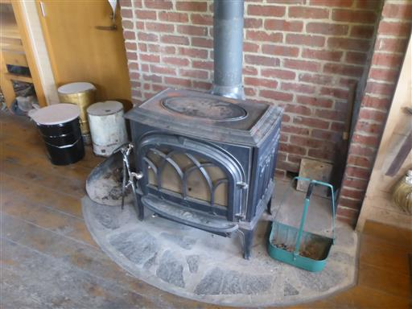
八幡沼を過ぎると木道になり、湿原に到着する。
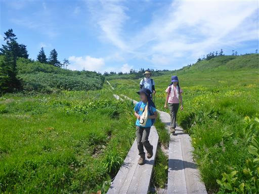
広い。素晴らしい景観だ。
山頂も、八幡沼も、湿原も、人がほとんど歩いていないのも良い。
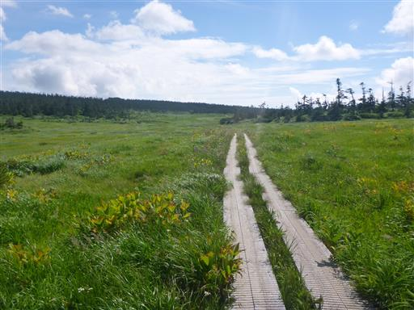
木道はギザギザになっている。平らだと濡れたら滑りまくるので、嬉しい配慮だ。
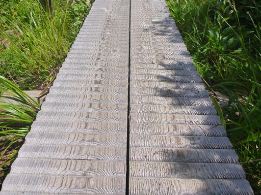
ワタスゲが光っている。
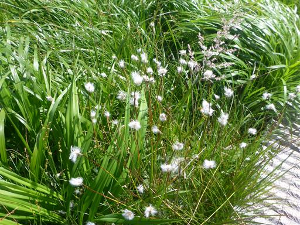
エゾオヤマリンドウ。
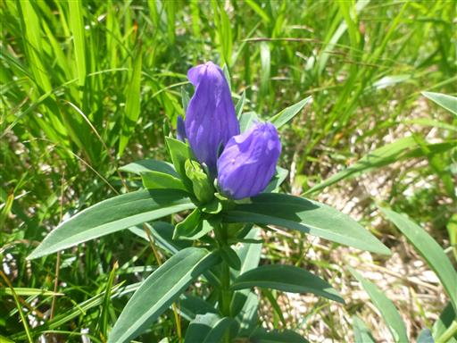
美しい湿原の中の木道をのんびり歩く。
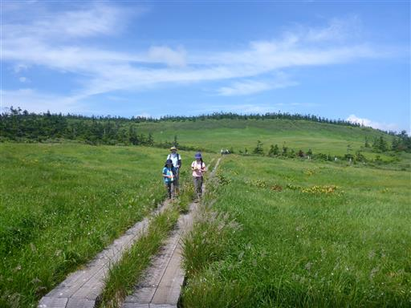
途中で小さな川を渡る。方向を考えると八幡沼から流れ出している水のように見える。
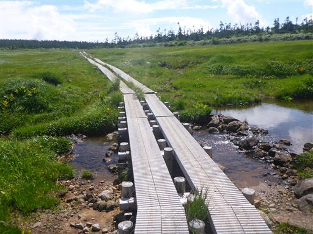
水は湿原の中を流れ下っていく。
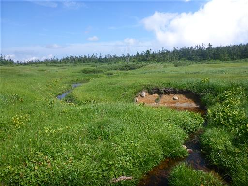
あちらこちらに池塘が見られる。
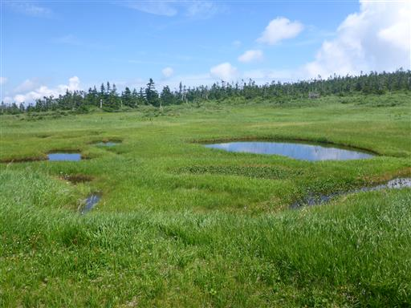
八幡沼の端に到着。大きい沼だ。
沼と称しているが、岩手県で2番目に大きな湖だそうだ。
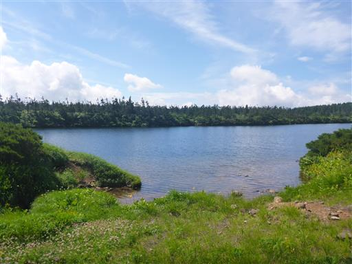
湿原の終点。歩いてきた道を振り返る。
ここから八幡沼を一周するコースと分かれて源太森方面に足を延ばす。
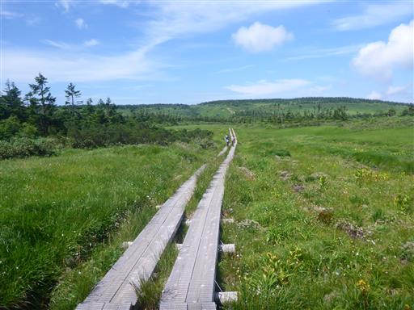
ここからは樹林帯の中の道になる。
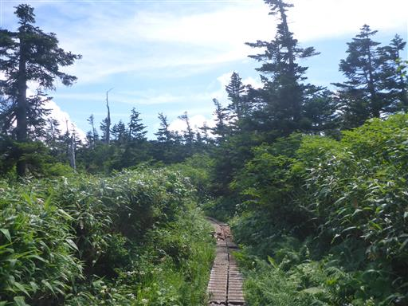
あちらこちらに黒い蝶が飛んでいる。調べたらクジャクチョウという種類のようだ。
羽を開くとクジャクのような目玉模様が見られるのだが、開いているところをなかなか写真に撮れない。
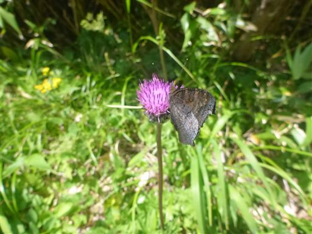
しばらく歩くと木道がなくなり普通の登山道になる。
傾斜はずっと緩やかだ。
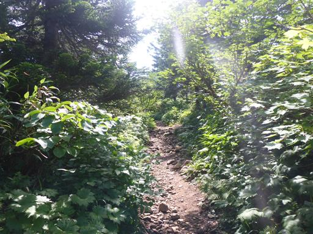
源太森に到着。八幡平三大展望地の一つに数えられている。
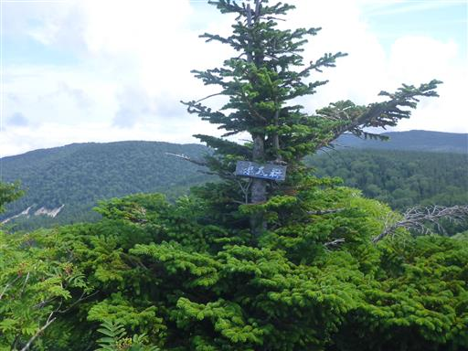
素晴らしい展望が広がる。遠くに見えるのが八幡沼と湿原、左手に見えるのは畚岳だ。
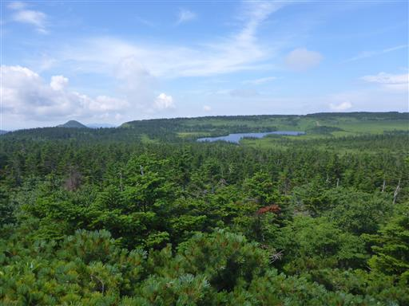
山頂には展望盤が設置されている。
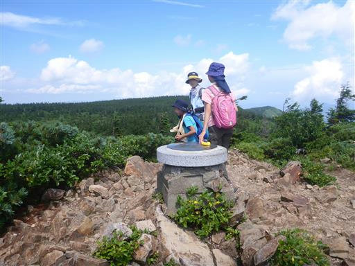
少し時間が押しているのですぐに出発。
この辺りの木道は荒れている。
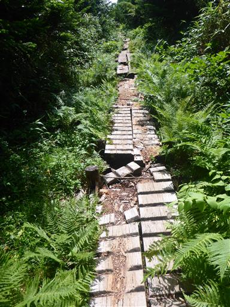
深く削られた道。人が歩いたり水が流れたりして削れてしまったのだろうか？
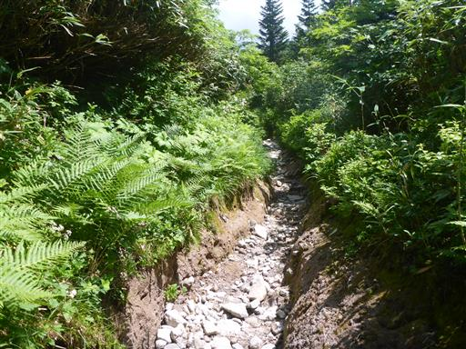
その後は不思議な形の木道になる。
パッチワークのような凸凹の木道だ。
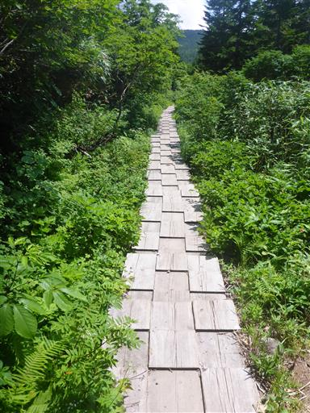
黒谷地湿原に到着。
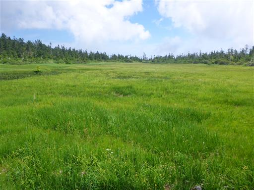
展望台で一休み。

この辺りは少し登山道が水没している。
黒谷地湿原はあまり広くなく、あっという間に通り過ぎてしまう。
再び樹林帯の中へ。ここからは茶臼岳に向かうため、登山道は登りとなる。
緑色に輝く美しい虫を発見。アオハムシダマシだろうか？

茶臼山荘に到着。ここも避難小屋だ。ここから茶臼岳を往復する。
茶臼岳山頂に到着する。標高1578m。
ここも八幡平三大展望地の1つだ。眼下に見えるのは夜沼。
沼の近くに行ける遊歩道はない。八幡平にはこのような沼があちらこちらに無造作に存在する。
こちらは畚岳と熊沼。雲が出てきて展望がだいぶ隠されてしまった。

茶臼岳で昼食をとったら下山開始。完全に雲に覆われてしまった。
周囲はトンボだらけだ。
下山。
茶臼口のバス停でバスを待つ。1日3本程度しかバスが来ない。
時間が押していて少し速めに歩いたため、30分も早く着いてしまった。
バスで駐車場まで戻ってくる。
バスの時間を調べて乗ってくる人が他にも何名かいたのが驚きだ。
八幡平は沼と湿原の風景が素晴らしい山だった。
一方、そこから先の登山道は単調で少々面白味に欠ける道だった。
周囲をアサギマダラがふわふわと飛んでいる。
帰りは後生掛温泉に足を延ばす。
後生掛キャンプ場に泊まった場合はここの温泉を利用しようと思っていたので
一度行ってみたいと思っていた。一軒宿で日帰り入浴もできる。
アスピーテラインでの帰路、松尾八幡平地熱発電所を車窓から見学。
この辺りは地熱発電所が多い。
キャンプ場に戻ってくる。せっかく岩手に来たので、本日は岩手産ワインを頂く。
キリギリス。足を一本ずつ舐めた後は触角を舐めている。きれい好きな奴だ。
おしりが白い珍しいアブ。シオヤアブという種類らしい。
人に寄ってくるアブが多い中、こいつはあまり人に興味を示さない。